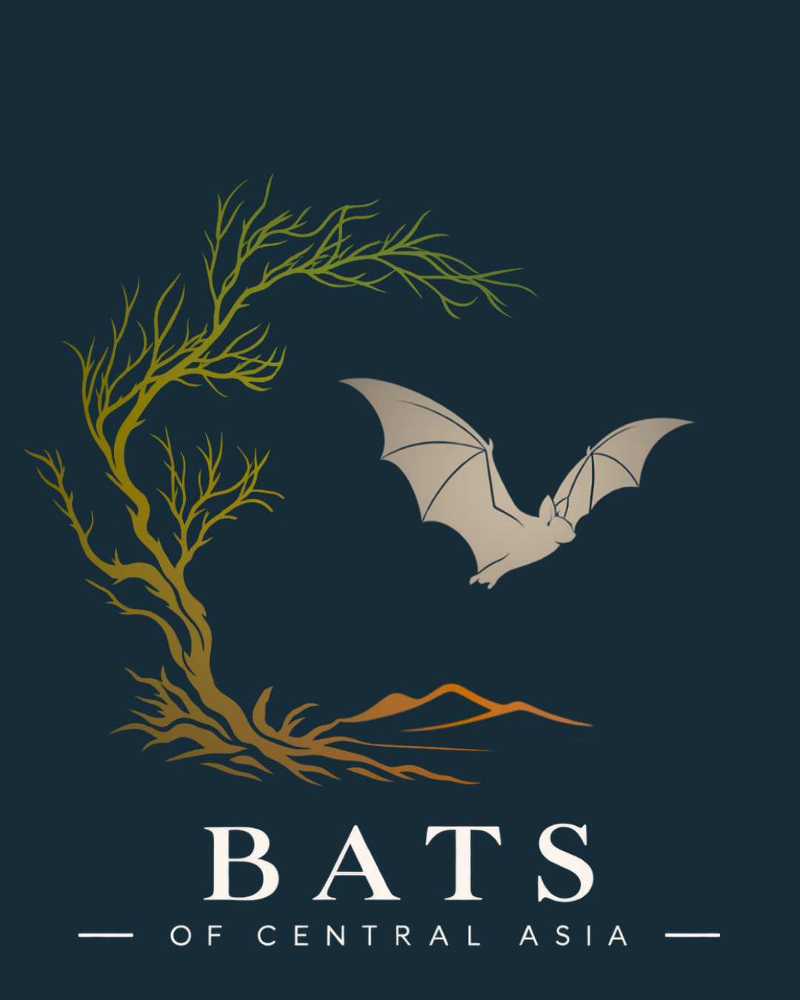
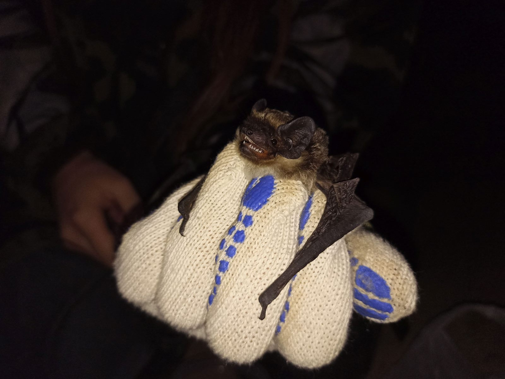
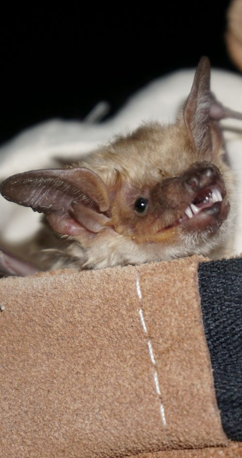
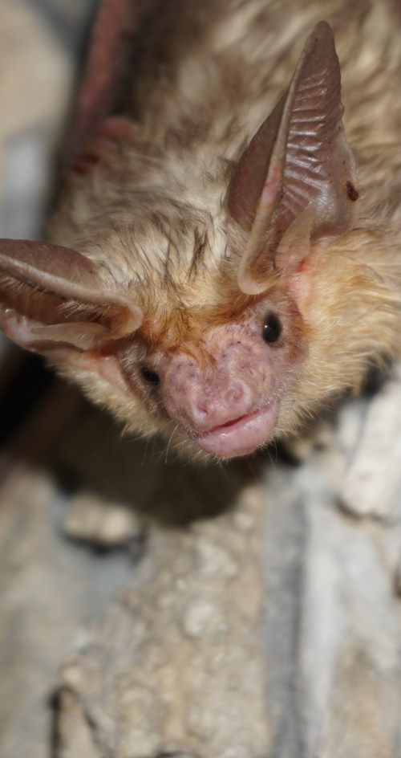
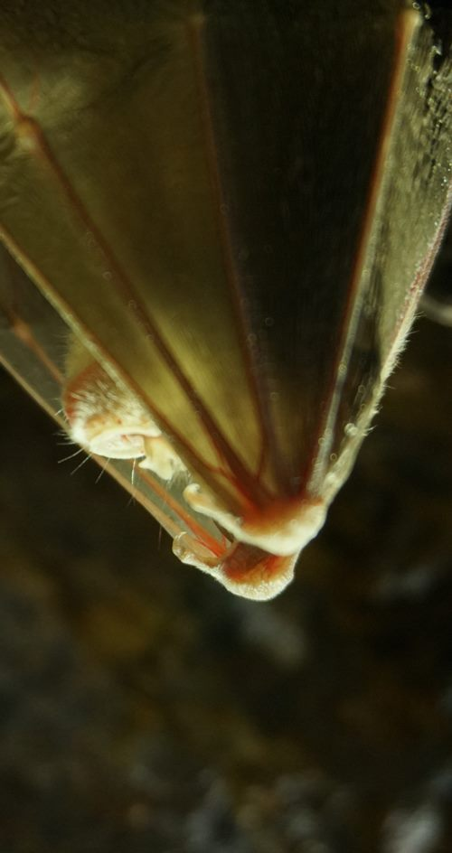
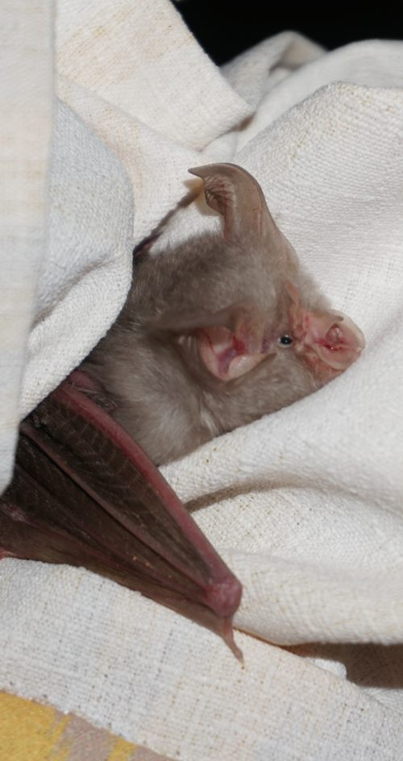
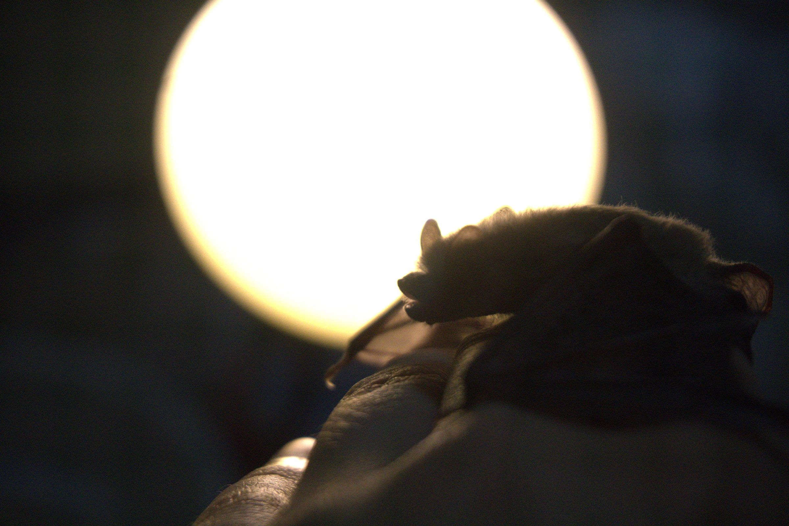

Команда специалистов на страже биоразнообразия
Центр помощи летучим мышам
Летучие мыши Центральной Азии
Каждая летучая мышь за ночь съедает тысячи вредных насекомых.
-

Если вы нашли летучую мышь Бесплатно · круглосуточно Помощь рукокрылым Пошаговые инструкции: летучая мышь залетела в квартиру, лежит на земле или поселилась в доме. -

Они опасные? Мифы и факты Летучие мыши и человек Летучие мыши не пьют кровь, не разносят заразу, не цепляются в волосы и не родня грызунам. Ещё больше фактов — здесь! -

Виды рукокрылых 29 видов региона Справочник видов Каталог видов с поиском и фильтрами по странам, охранному статусу и риску гибели на ветряках. -

Убежища и угрозы Пещеры · постройки Энциклопедия Что угрожает летучим мышам, где они живут и как вести себя в пещерах. -

Материалы Постеры · статьи Рекомендации Советы строителям, орнитологам и ветропаркам; постеры, наклейки, календари и статьи. -

Связаться с нами KZ · UZ · TJ · TM Контакты специалистов Специалисты в Казахстане, Узбекистане, Таджикистане и Туркменистане, а также наши Telegram, Instagram и Facebook.